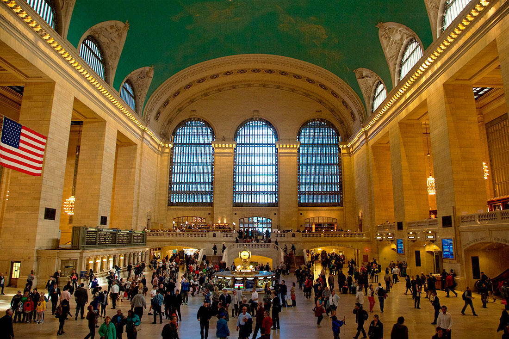

8(800)325-75-89
Добро пожаловать в Нью-Йорк
Нью-Йорк – это один из крупнейших мегаполисов мира (как Лос-Анджелес и Бангкок), очень популярный среди туристов. Географически он находится в одноименном штате на Восточном побережье Северной Америки, в 328 км к северо-востоку от столицы США – города Вашингтон. Чтобы добраться до Нью-Йорка из Европы, нужно пересечь Атлантический океан.
Отдых в Нью-Йорке будет интересен всем, кто учил английский язык, погружением в языковую среду, насквозь пронизанную концентрированным духом американского образа жизни и современной культуры. В отличие от отдыха в отелях Майами прямо на берегу океана, в Нью-Йорке нет хорошего пляжного отдыха. Это город небоскребов, поэтому не стоит рассчитывать здесь беззаботно поваляться на песочке даже летом, несмотря на наличие нескольких городских пляжей. За этим лучше полететь на пляжи Лос-Анджелеса или забронировать отель 5 звезд на Гавайях. Зато во время путешествия в Нью-Йорк вы, как и в Голливуде, сможете встретить мировую знаменитость, популярного актера или звезду телешоу (например, во время прогулки по Центральному парку, пробежки с любимой собачкой или прямо в метро). Это еще одна причина, почему туристы так любят Нью-Йорк.

Статуя Свободы, подаренная Соединенным Штатам французами, вот уже более ста лет приветствует всех прибывающих на американское побережье. Госпожа Свобода, стоящая на пьедестале, впечатляет своей высотой в 93 м (305 футов). Желающие полюбоваться видами Бруклина и осмотреть каркас статуи, возведенный по проекту Гюстава Эйфеля, поднимаются на обзорные площадки.
Небоскрёб Эмпайр-стейт-билдинг
Из того, что посмотреть в Нью-Йорке в первую очередь, знатоки называют здание Эмпайр-стейт-билдинг, узнаваемое во всем мире. Оно словно парит над Манхэттеном на высоте в четверть мили. Башня оборудована двумя обзорными площадками на 86 и 102 этажах. Отсюда открываются великолепные виды. Здесь же представлены экспонаты, рассказывающие об истории небоскреба и его большом значении. Здание Эмпайр-стейт-билдинг появлялось в более 250 фильмов. Его часто называют «любимое здание Америки».
Центральный парк

Центральный парк, расположенный в центре Манхэттена, занимает пространство в 840 акров. На его территории находится множество интересных объектов, в том числе замок Бельведер и зоопарк. Для любителей природы, ищущих уголок, где можно отдохнуть от большого города, в парке открывается масса возможностей.

Бруклинский мост

Бруклинский мост, построенный в период с 1869 по 1883 г., – один из наиболее старых и узнаваемых подвесных мостов в мире. Его протяженность – 5989 футов. Мост, перекинутый через пролив Ист-Ривер, соединяет Манхэттен и Бруклин. Каждый день по нему проезжает более 120 тыс. автомобилей и 2600 велосипедистов. Ежедневно мостом пользуется свыше 4 тыс. пешеходов.

Гранд Сентрал Терминал – Центральный вокзал

Большой центральный вокзал называют самым красивым вокзалом в мире. Посетители с удовольствием рассматривают искусно выполненную отделку потолка вокзала, создание которой относится к 1912 г. На нижнем уровне расположены железнодорожные пути и ресторанная зона, где предлагается широкий выбор заведений для желающих пообедать. Зал Вандербилта, находящийся чуть в стороне от главного вестибюля, первоначально задумывался как зал ожидания. Сейчас он стал местом проведения ежегодной рождественской ярмарки и тематических выставок.
Собор Святого Патрика
Собор Святого Патрика – превосходный образец готического Возрождения. Храм известен своими массивными бронзовыми дверьми, беломраморным фасадом, шпилями, высота которых достигает 330 футов, большим органом, круглыми окнами-розетками и бронзовым балдахином. Здание воздвигнуто в 1879 г., бережно восстановлено и поддерживается в надлежащем состоянии. Расходы на ремонтные работы, закончившиеся в 2016 г., составили 200 млн долларов.
Организация поездки
Отзывы
Поездка в Нью-Йорк – это одно из самых интересных путешествий в США, в котором мы когда-либо были. Побывать в Нью-Йорке мы мечтали очень давно, и вот, наконец, это случилось! Купили недорогие авиабилеты у Let's Travel и полетели из Москвы в Нью-Йорк. Так началось наше путешествие по Восточному побережью США, где находится Нью-Йорк. Мы провели в этом шумном городе 4 дня, обошли Манхэттен и все его самые интересные достопримечательности пешком. Он нам так понравился, что решили написать свой отзыв о Нью-Йорке, городе небоскребов и невероятных возможностей.

Посетить Нью-Йорк было моей давней мечтой. Я обожаю американские фильмы, американцев, их образ жизни и все, что связано с Америкой. Нью-Йорк - это очень дорогой город. Тем более для студента из России. Поэтому моей самой главной целью была максимальная экономия. Благодаря Let's Travel у меня все получилось. Провела я в этом городе всего два дня, но все же успела насладиться бешеным ритмом этого мегаполиса.
В нью- йорке я была несколько раз и каждый раз этот город открывался по — своему, с какой-то неведомой мне стороны, но всякий раз он великолепен, а таймс-сквер - это бриллиант в золотом обрамлении, город- сказка, город- театр. Спасибо Let's Travel, эта поездка была лучше всех)